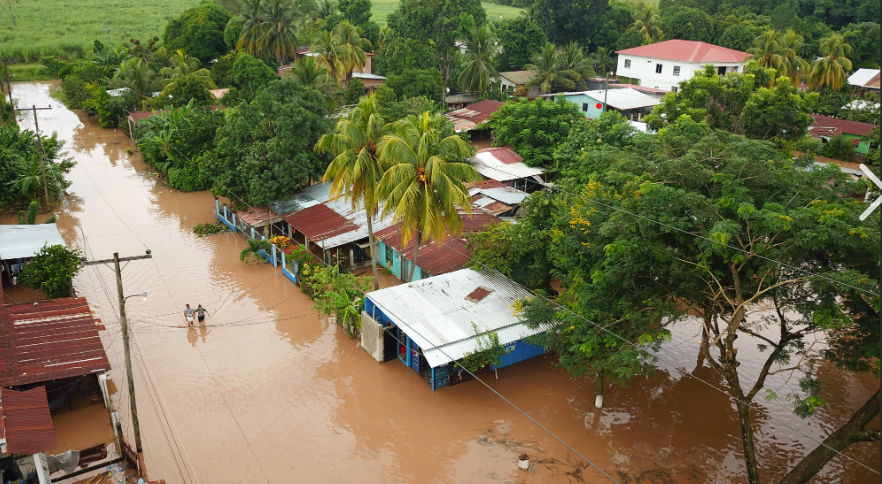
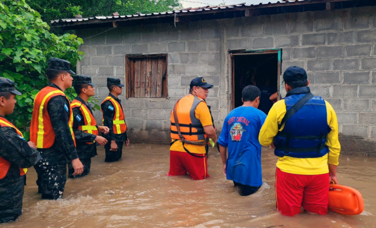
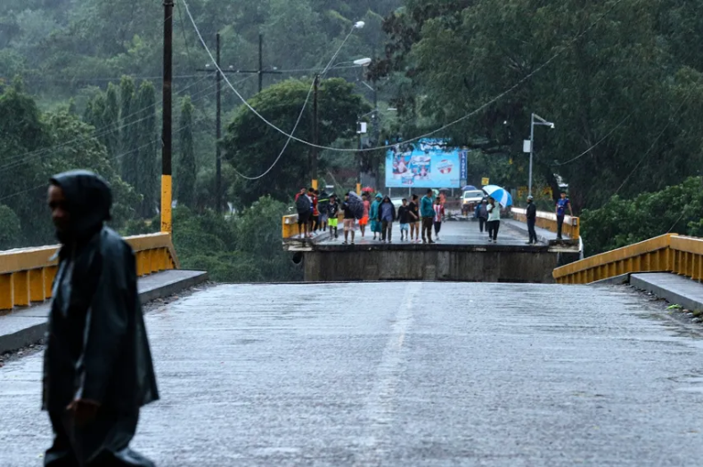
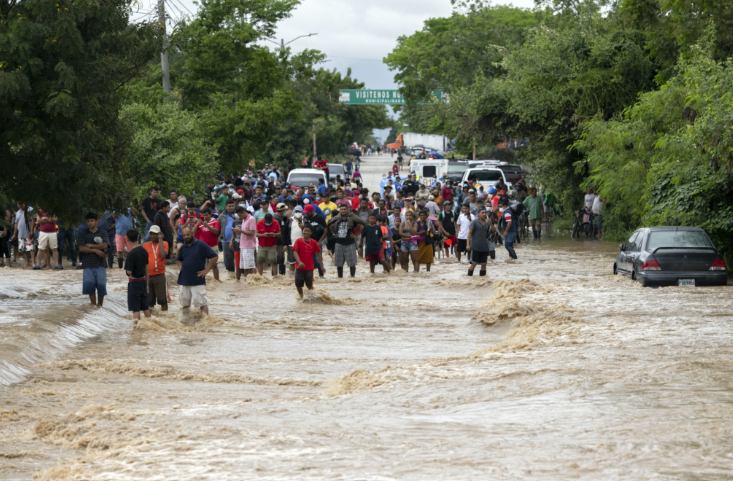

Noticias
Mantente informado de lo más importantes

Lluvias intensas en el norte dejan 16 familias afectadas y evacuaciones preventivas
Una masa de aire frío provoca inundaciones en el litoral Atlántico. COPECO mantiene alerta amarilla en siete departamentos del norte del país.

Rescatan a familia de casa inundada tras fuertes tormentas en Puerto Cortés
Un frente frío deja miles de afectados, viviendas dañadas y comunidades incomunicadas en el norte de Honduras.

Tormenta Tropical Sara deja un muerto y más de 47 mil afectados en Honduras
El fenómeno climático causa graves daños en los departamentos de Gracias a Dios, Colón, Atlántida y Yoro.
COPECO declara alerta verde en siete departamentos por lluvias y vientos
Una masa de aire frío genera lluvias intensas en el Caribe hondureño. Recomiendan precaución por el aumento del caudal de ríos.

Estos son los nombres de huracanes 2026 en el Atlántico y su riesgo en Honduras
Conoce la lista oficial de nombres para la temporada de huracanes 2026 y cómo podría impactar al país.
Pronóstico por Regiones
Condiciones climáticas actuales en las diferentes zonas de Honduras
Región Atlántica
Cortés, Atlántida, Colón, Islas de la Bahía
Clima cálido y húmedo, con lluvias frecuentes durante todo el año.
Región Occidental
Copán, Ocotepeque, Lempira, Intibucá
Zona montañosa con clima fresco. Temperaturas más bajas del país.
Región Central
Francisco Morazán, Comayagua, La Paz
Clima de sabana tropical, con dos estaciones bien marcadas.
Región Sur
Choluteca, Valle
La región más cálida de Honduras. Temperaturas elevadas la mayor parte del año.
Región Oriental
Olancho, Gracias a Dios
Clima de sabana tropical, con la biósfera del Río Plátano.
Mantente Informado sobre el Clima
Observa el estado metereologico de tu ciudad o pais en tiempo real, para que estés siempre preparado ante cualquier cambio climático.